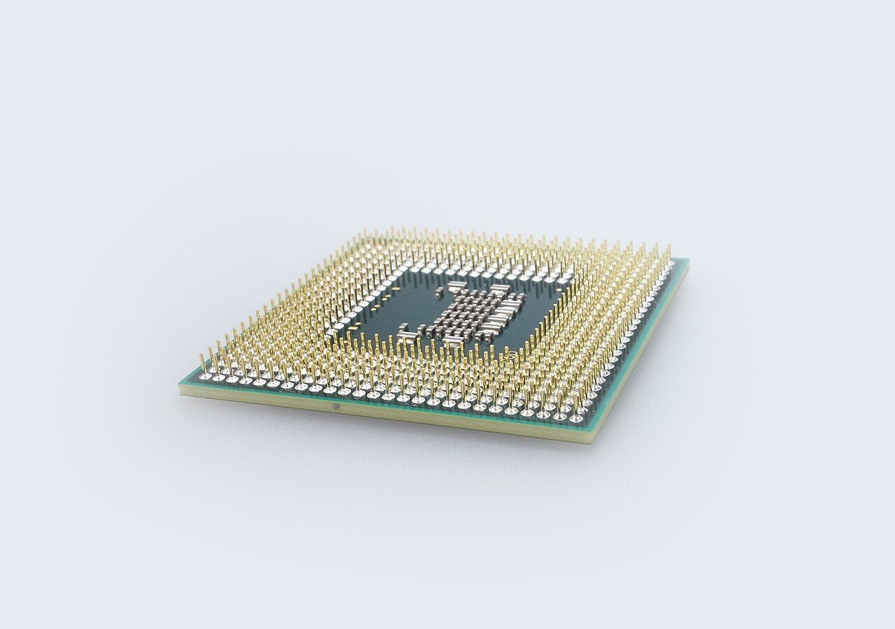
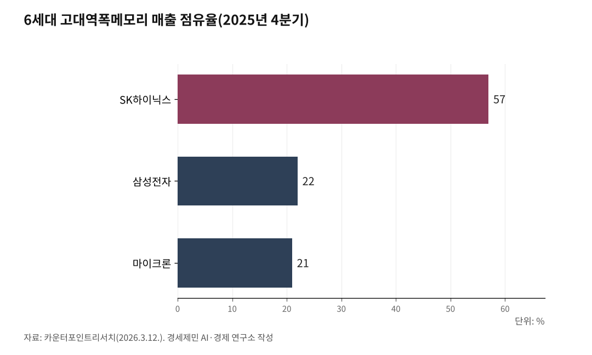

[포스트 미토스 AI ④] 미토스가 흔든 한국 반도체 ⋯ HBM 1·2위가 잡고 있다
SK하이닉스 1분기 영업이익 37조 ⋯ 빅테크 D램 5년 입도선매 ⋯ 인천 송도엔 앰코 후공정 거점
미토스 시대, 메모리 벽이 무너진다
AI경세제민=김갑봉 기자 | 대만 시장조사기관 트렌드포스가 2026년 1월 16일 낸 보고서 「메모리 벽 병목」은 그 구조를 사실대로 짚었다. 모형이 토큰을 하나 만들 때마다 그래픽처리장치(GPU)는 가중치와 키밸류 캐시(이전 대화 맥락을 저장한 임시 메모리)를 통째로 다시 읽는다.

같은 보고서를 보면 인공지능 칩 연산 능력은 2년 동안 3배 늘었지만 메모리 대역폭은 1.6배, 칩 사이 연결 대역폭은 1.4배 늘었다. 연산이 메모리를 기다리는 시간이 늘어났다는 뜻이다. 미토스 같은 추론형 모형은 답 한 줄을 만들 때 수천 개 토큰을 길게 만들어 가며 키밸류 캐시를 반복 호출한다. 메모리가 늦으면 답이 늦다.
해법은 더 큰 고대역폭메모리다. 트렌드포스는 2026년 양산이 시작되는 6세대 고대역폭메모리(HBM4) 한 묶음 대역폭이 초당 2테라바이트에 이를 것으로 봤다. 직전 세대보다 두 배다. 같은 기관은 2026년 고대역폭메모리 수요가 전년 대비 70% 이상 늘어날 것으로 추산했다.

한국 두 회사, HBM 시장 1·2위
이 시장을 SK하이닉스와 삼성전자가 잡고 있다. 카운터포인트리서치가 2026년 3월 12일 공개한 분기별 자료를 보면 매출 기준 6세대 고대역폭메모리 시장 점유율은 2025년 4분기 SK하이닉스 57%, 삼성전자 22%, 마이크론 21%다. 같은 기관은 직전 세대 4분기 점유율 SK하이닉스 51%·삼성전자 40%에서 2025년 1분기 SK하이닉스 69%·삼성전자 13%로 격차가 벌어졌다고 밝혔다.
그 결과는 실적으로 나타났다. SK하이닉스가 2026년 1월 28일 발표한 2025년 연간 실적을 보면 매출 97조 1467억 원, 영업이익 47조 2063억 원, 영업이익률 49%다. SK하이닉스는 자체 보도자료에서 D램 부문 고대역폭메모리 매출이 전년보다 두 배 이상 성장했다고 밝혔다.
삼성전자가 2026년 1월 29일 발표한 2025년 4분기 실적을 보면 전사 매출 93조 8000억 원, 영업이익 20조 1000억 원이다. 반도체를 담당하는 디바이스솔루션(DS) 부문이 매출 44조 원, 영업이익 16조 4000억 원으로 사상 최대 분기 실적을 냈다.
추세는 2026년 들어 더 가팔라졌다. 삼성전자가 2026년 4월 7일 발표한 1분기 잠정 실적은 매출 133조 원, 영업이익 57조 2000억 원이다. 영업이익이 전년 동기 대비 755% 증가했다.
SK하이닉스가 2026년 4월 23일 발표한 1분기 실적은 매출 52조 5763억 원, 영업이익 37조 6103억 원, 영업이익률 72%다. 분기 매출이 사상 처음 50조 원을 넘었다. SK하이닉스는 자체 자료에서 인공지능 기반시설 투자 확대로 수요 강세가 이어졌다고 설명했다.
빅테크가 5년 입도선매에 줄섰다
메모리 품귀가 거래 관행을 바꿨다. 트렌드포스는 같은 보고서에서 2026년 D램 가격이 전년 대비 70% 이상 오를 것으로 봤다. 가격을 올려도 물량이 부족한 판매자 우위 시장이다.
빅테크는 1년 단위 거래를 5년 단위 장기공급계약(LTA)으로 바꾸는 길을 골랐다. 한국경제가 2026년 4월 13일 보도한 자료를 보면 SK하이닉스는 마이크로소프트와 디디알5(DDR5) 5년 단위 장기공급계약 최종 조율 작업을 벌이고 있다. 계약액 일부를 미리 지급하는 조건도 같이 논의되고 있다. 전영현 삼성전자 디바이스솔루션 부문 대표이사도 2026년 3월 정기주주총회에서 "고객사와 공급 계약을 기존 연·분기 단위에서 3~5년 다년 공급 계약으로 전환하는 것을 추진 중"이라고 밝혔다.
이는 매출 호재를 넘어 사업 모형 자체를 바꾸는 변화다. 메모리 회사가 고객 주문을 미리 받고 그에 맞춰 짓는 파운드리식 선수주 후생산 구조에 가까워졌다. 빅테크는 가격 변동 위험을 회사가 떠안는 대신 물량 안정을 얻고, 메모리 회사는 가동률과 가격 예측 가능성을 얻는다.
수요 집중에는 그늘도 있다. 비즈한국이 2026년 3월 18일 보도한 SK하이닉스 사업보고서 분석을 보면 단일 외부 고객 매출이 23조 2601억 원으로 연결 매출 97조 1467억 원의 23.9%를 차지했다. 회사는 거래처 이름을 밝히지 않았지만 업계는 이 단일 고객을 엔비디아로 보고 있다.
추격도 가팔라진다
추격은 동시 다발이다. 카운터포인트리서치가 2026년 3월 12일 공개한 자료를 보면 6세대 고대역폭메모리 시장에서 삼성전자 점유율이 2025년 1분기 13%에서 4분기 22%로 9%포인트 올랐다. 같은 기관은 6세대 고대역폭메모리(HBM4)가 2026년 1분기 삼성전자 출하를 시작으로 엔비디아 루빈에 탑재될 예정이라고 밝혔다.
중국 추격도 변수다. 미국 매체 「IEEE 스펙트럼」이 2026년 4월 보도한 분석을 보면 중국 메모리 회사 시엑스엠티(CXMT)는 5세대 고대역폭메모리(HBM3) 양산을 2026년에서 2027년 사이로 잡고 있다. 미국 정부가 2025년 5월 7일 발표한 인공지능 칩 수출 통제는 중국으로 가는 첨단 메모리 흐름을 막는 변수로 남아 있다.
한국 두 회사 영업이익을 떠받친 토대는 후발 기업이 따라잡지 못한 기술 격차다. 그 격차가 좁혀지는 속도가 향후 3년 한국 반도체 손익을 좌우할 변수다.
인천 송도, 후공정에서 받는다
기술 격차는 칩에만 있지 않다. 미토스 시대 인공지능 칩은 일반 반도체보다 패키징(여러 칩을 하나로 묶는 마지막 공정)이 훨씬 복잡하다. 그래픽처리장치 다이 여러 개와 고대역폭메모리 묶음을 하나의 부품처럼 잇는 2.5차원·3차원 패키징이 필수다. 한국이 잡은 자산은 후공정에도 있다.
인천경제자유구역청이 2025년 11월 19일 발표한 자료를 보면 세계 2위 후공정 기업 앰코테크놀로지코리아는 송도 첨단산업단지 안 시험시설 증축에 외국인 직접투자 2661억 원을 투입한다. 지상 4층, 연면적 4만 6148㎡ 규모로 2027년 가동이 목표다. 송도사업장은 앰코 그룹에서 유일한 세계 연구개발·시험 거점이다.
인천투데이가 2025년 9월 10일 보도한 「에이아이(AI)범용경제⑫ 송도 반도체」를 보면 앰코코리아 2024년 매출은 5조 2681억 원, 스태츠칩팩코리아 2024년 매출은 1조 2295억 원이다. 두 회사 인천 종사자만 1만 명을 넘는다.
후공정만 있는 것이 아니다. SK하이닉스는 자체 보도자료에서 청주 P&T7과 미국 인디애나의 어드밴스드 패키징 공장도 순조롭게 준비해 전공정과 후공정을 아우르는 세계 통합 제조 역량을 갖추겠다고 밝혔다. 한국 반도체가 메모리에서 후공정까지 한 줄로 잇는 흐름이다. 인천 송도와 영종은 그 줄의 한 매듭이다.
미토스가 만든 메모리 수요 폭증을 한국 두 회사가 잡고, 빅테크가 5년치 물량을 입도선매하고 있다. 그 칩이 인천에서 마지막 옷을 입는다. 기회와 위협이 같이 와 있고, 점유율은 분기마다 흔들린다.
참고문헌
· 「2025년 경영실적 발표… 역대 최대 실적 달성·최대 주주환원 단행」, SK하이닉스 뉴스룸, 2026.1.28., https://news.skhynix.co.kr/2025-business-results/
· 「2026년 1분기 경영실적 발표」, SK하이닉스 뉴스룸, 2026.4.23., https://news.skhynix.co.kr/q1-2026-business-results/
· 「삼성전자, 2025년 4분기 실적 발표」, 삼성전자 뉴스룸, 2026.1.29., https://news.samsung.com/kr/삼성전자-2025년-4분기-실적-발표
· 「삼성전자, 2026년 1분기 잠정실적 발표」, 삼성전자 뉴스룸, 2026.4.7., https://news.samsung.com/kr/삼성전자-2026년-1분기-잠정실적-발표
· "Memory Wall Bottleneck: AI Compute Sparks Memory Supercycle", TrendForce, 2026.1.16., https://www.trendforce.com/insights/memory-wall
· 「전세계 D램 및 HBM 시장 점유율: 분기별 데이터」, 카운터포인트리서치, 2026.3.12., https://korea.counterpointresearch.com/global-dram-and-hbm-market-share-quarterly/
· 「에이아이 빅테크 D램 5년 계약하자⋯삼성전자·SK하이닉스에 줄선다」, 한국경제, 2026.4.13., https://www.hankyung.com/article/2026041362121
· 「1년 계약은 이제 옛말⋯삼성·SK하닉, 3~5년 장기공급 아니면 안 판다」, 아주경제, 2026.4.8., https://www.ajunews.com/view/20260408161218003
· 「SK하이닉스 단일 고객 매출 2.1배 증가⋯미국 매출 비중 69%」, 비즈한국, 2026.3.18., https://www.bizhankook.com/bk/article/31779
· 「앰코테크놀로지, 인천 송도공장 반도체 시험시설 증축」, 인천경제자유구역청 보도자료, 2025.11.19.
· 김갑봉, 「[AI범용경제⑫] 송도 반도체 클러스터, AI 후공정 글로벌 허브로」, 인천투데이, 2025.9.10., https://www.incheontoday.com/news/articleView.html?idxno=308083
· "Claude Mythos Preview System Card", Anthropic, 2026.4.7., https://www.anthropic.com
· "Trump administration to rescind and replace Biden-era global AI chip export curbs", Reuters, 2025.5.7.
· "Is AI's High Bandwidth Memory Crunch About to Hit Your Wallet?", IEEE Spectrum, 2026.4.
※ 이 기사는 인공지능 프로그램 클로드를 활용해 작성했습니다.
사진 출처
· [대표사진] blickpixel, "Puce.jpg", 위키미디어 공용, CC0, https://commons.wikimedia.org/wiki/File:Puce.jpg
※ 이 기사는 인공지능을 활용해 작성했습니다.
관련기사
- [포스트 미토스 AI ⑤] AGI 도래, 사장과 AI만 있으면 1인 기업 '폭발'
- [포스트 미토스 AI ③] 한국 보안 18조 6000억, 글래스윙 밖에서 7월 패치 못 받는다
- [포스트 미토스 AI ②] 앤트로픽 글래스윙 협력사 12개, 한국 기업은 없다
- [포스트 미토스 AI 번외] 양자컴퓨터 X 미토스, 방패와 창이 동시에 바뀐다
저작권자 © AI경세제민 무단전재 및 재배포, AI학습 및 활용 금지